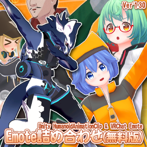
2021年12月20日 更新 2019年 04月19日 作成
| ファイルについて |
| 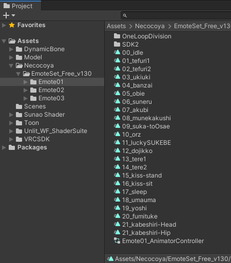 【EmoteSet_Free_v***.unitypackage】をインストールすると、上図のように Emote01～03のフォルダに分かれて、その中にAnimationClipファイルが入っています。 一番下の［Emote**_AnimatorController］に、アバターのモーションを確認するためのステートが予め組み立てていますので、これをアバターに組み込めば すぐにScene上で確認することができます。（やり方は後述） |
| 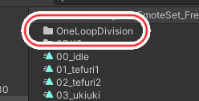 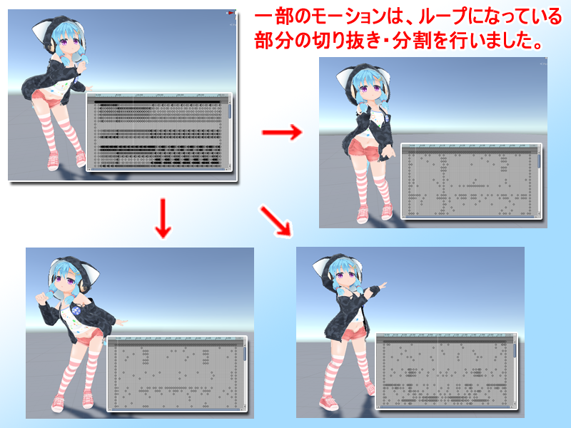 ［OneLoopDivision］フォルダ内には、一部のモーションで短いループになっている部分を切り抜き・分割したAnimationClipファイルが入っていますので活用してください。 |
| 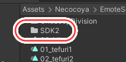 ［SDK2］フォルダ内には、旧バージョンに入れていた、SDK2.0の仕様上の問題でループになっている１モーションをひたすら繋げたAnimationClipが入っています。 SDK3.0-Avatarから このAnimationClipは必要ないので、どうしてもSDK2.0でないとダメだという方以外は無視してください。 |
| VRChatで利用する方法 |
| 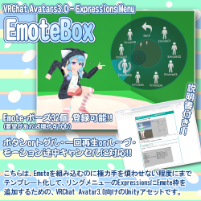 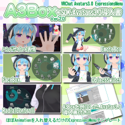 本モーションをVRChatで利用したい場合、別で配布している［EmoteBox］か［A3Box］を利用すれば、VRChat上でEmoteを利用することができますので、皆様ぜひご利用ください。（難易度は前者の方が簡単です） なお、組み込み方はそちらの説明書の方を参照してください。本モーションファイルがそのまま使えます。 |
| Unity上でのモーション確認方法 |
| 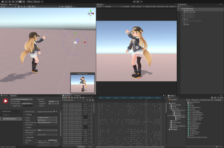 Unity上で［Emote詰め合わせ］のAnimationClip（以下 本モーション）を アバターに組み込んで動きを確認したい場合、以下の３つの方法があります。 ①：Inspectorのウィンドウで確認 ②：Animationウィンドウで確認 ③：Animatorウィンドウで確認 |
| ①：Inspectorウィンドウで確認 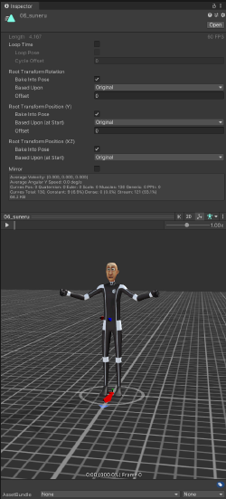 特に加工しないで さくっと動作を確認したい場合は、こちらの方法が便利です。 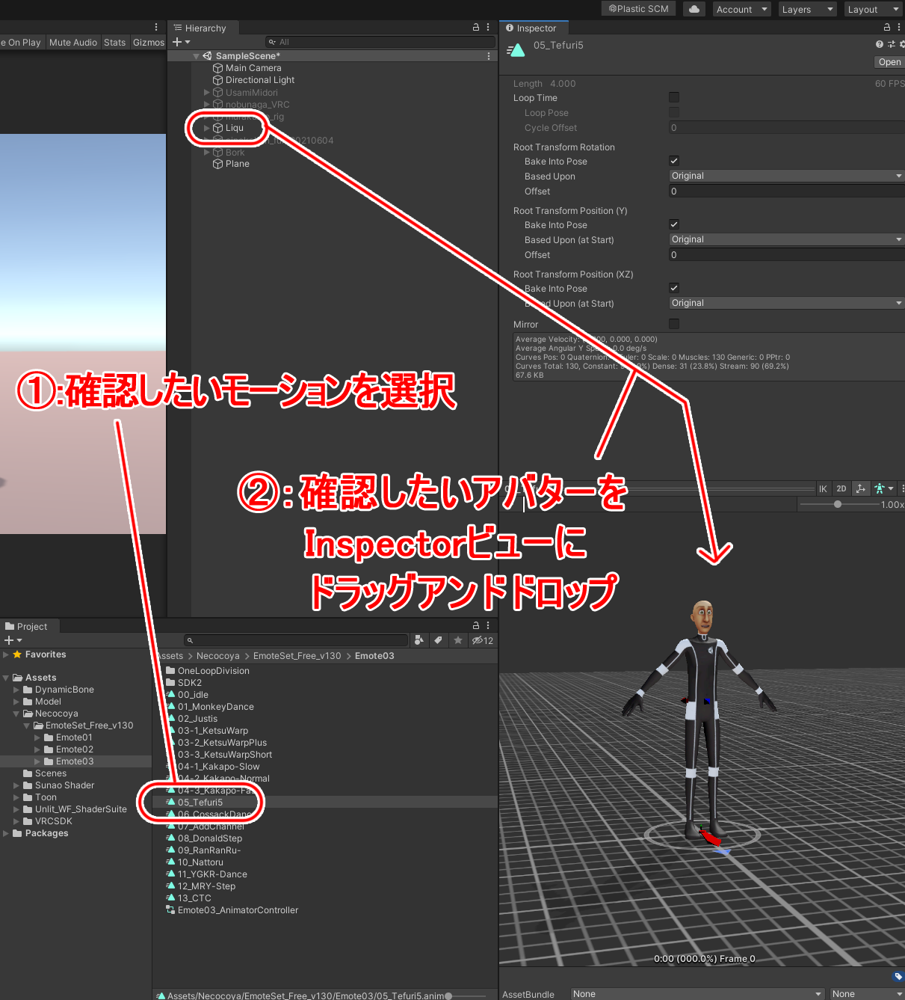 まず、動作を確認したいAnimationClipファイルを選択してください。そして、Inspectorの人形が写っている部分に、動作を確認したいアバターをドラッグアンドドロップをします。 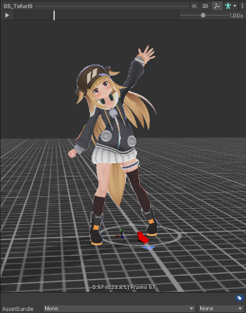 すると、ドロップしたアバターに変わるので、あとは左上の再生ボタンを押すとモーションを確認することができます。 |
| ②：Animationウィンドウで確認 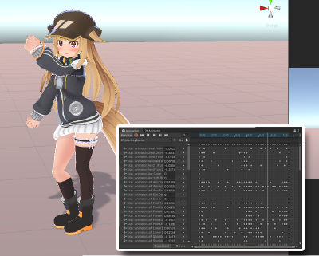 Sceneウィンドウで動作を確認したい場合は、Animationウィンドウで確認します。 こちらの特徴としては、ゲーム再生しなくてもモーションを確認することができるし、AnimationClipを加工したり表情などのBlendShapeキーを入れたい場合に、こちらの方法を使います。 ただし、欠点として 若干動きがモッサリします。キーの密度が濃いと それが顕著に出ます。 正確な動作を確認したいときや動画をキャプチャしたい場合は、次項の［③：Animatorウィンドウの方法］で確認してください。 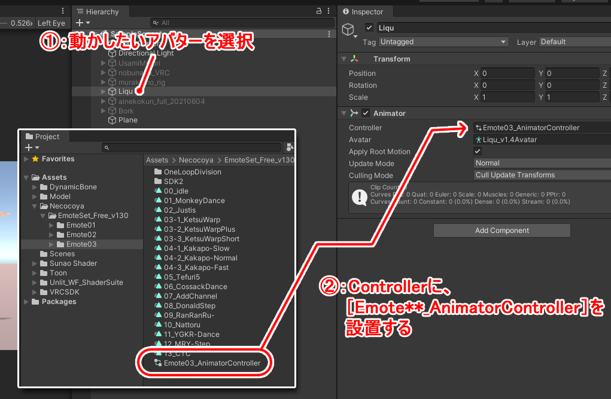 まずは、動かしたいアバターを選択し、InspectorのAnimatorの[Controller]に、各フォルダ内にある［Emote**_AnimatorController］を設置してください。 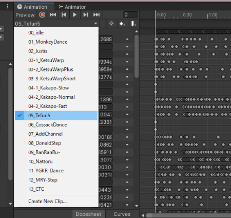 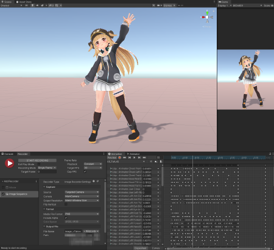 あとは、Animationウィンドウの左上にあるタブをクリックして、確認したいモーションを選択し、再生ボタンを押すと アバターがアニメーションします。 （ ゲーム再生無しでアニメーションすると、DynamicBone（揺れもの）やConstraint（関節などの補助ボーン）が動作しないので、それらも含めて確認したい場合はゲーム再生してからAnimationウィンドウを再生してください ） 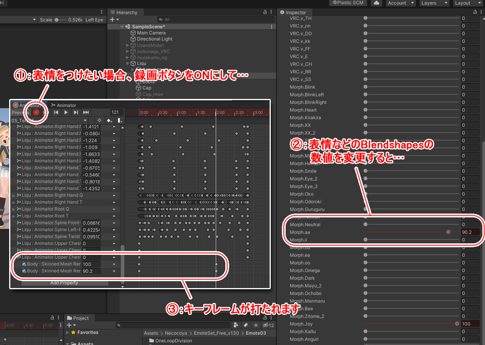 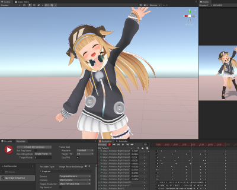 なお、この時にAnimationウィンドウの左上にある［●録画ボタン］をONにして、表情などのBlendshapesを操作すると、キーフレームが打たれて 表情付きのEmoteを作成することができます。 （ただし、これをVRChat-SDK3.0で利用する場合は工夫が必要です） |
| ③：Animatorウィンドウで確認 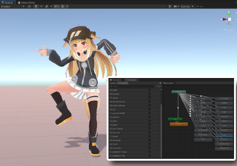 Scene・Gameウィンドウでかつ、軽くてモッサリしない正確な動きのモーションで確認したい場合や、動画をキャプチャしたい場合は、ゲーム再生からのAnimatorウィンドウでの操作がオススメです。 まずは、②と同じように、動かしたいアバターを選択し、InspectorのAnimatorの[Controller]に、各フォルダ内にある［Emote**_AnimatorController］を設置してください。 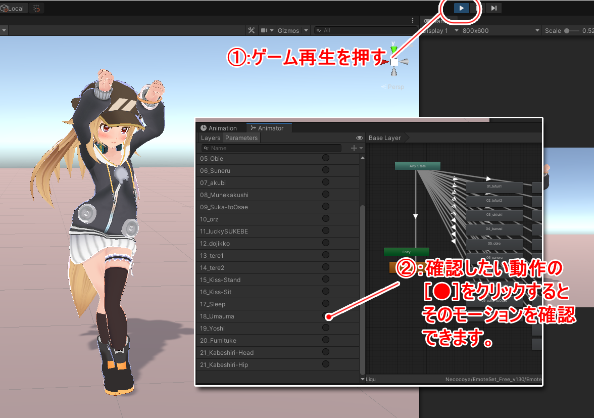 次にゲーム再生をして、AnimatorウィンドウのParameterに、各動作をするレイヤーがあるので、確認したいモーション名のレイヤーの［●］をクリックすると、アバターがそのモーションを取ります。 |
| ※VRChatにアップする予定のあるアバターの場合、アップロードする前に設置したAnimatorControllerは必ず外してください。 |
| VRChatで利用する方法 |
| Presented by |